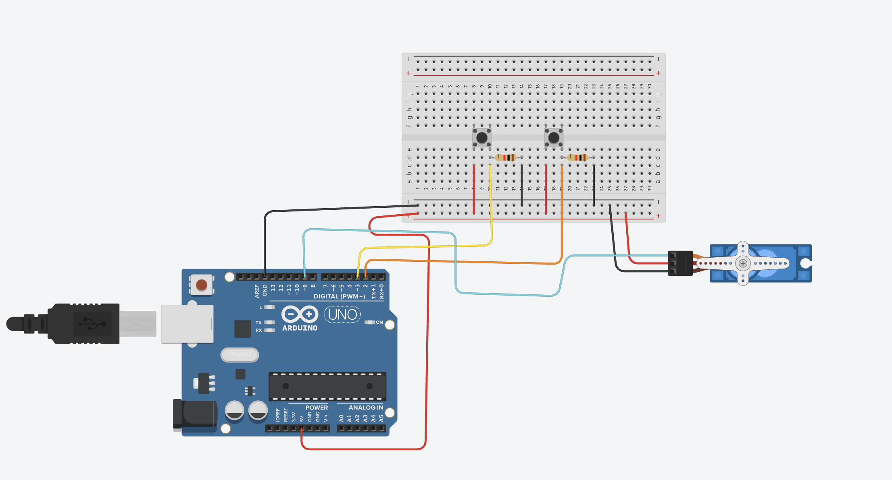
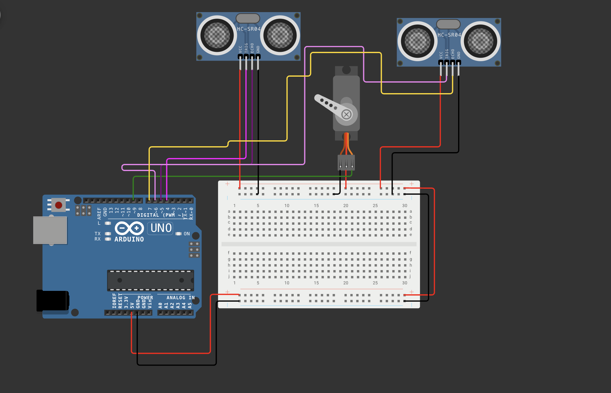

Guía de trabajo
Proyecto: Portero con Arduino
Asignatura: Tecnología / Robótica
Opciones del proyecto: Versión 1 con dos botones o Versión 2 con dos sensores ultrasónicos.
Completa primero la hoja en pantalla. Después puedes usar el botón para imprimir o guardar tu práctica en PDF con tus respuestas.
Elige una versión
El alumno deberá construir y programar una de las siguientes opciones:
Opción 1
Versión 1: Portero controlado con botones
Esta versión permite mover manualmente al portero hacia la izquierda o hacia la derecha mediante dos PushButton.
1. Introducción
En este proyecto construiremos un portero electrónico utilizando Arduino y un servo motor.
El portero reaccionará cuando se presionen dos botones:
- Botón izquierdo: el portero se mueve a la izquierda.
- Botón derecho: el portero se mueve a la derecha.
Este tipo de sistemas se utilizan en robótica para interpretar señales de entrada y controlar movimientos mecánicos.
2. Objetivo
Comprender cómo funcionan las entradas digitales utilizando botones y cómo controlar un servo motor mediante programación con Arduino.
3. Materiales
- Arduino UNO
- Protoboard
- 2 PushButton
- 2 resistencias de 10kΩ
- 1 Servo motor
- Fuente de alimentación externa para el servo motor
- Cables jumper
- Cable USB
4. Funcionamiento del sistema
- El Arduino mantiene el servo en la posición central al iniciar.
- Cuando se presiona el botón 1, el portero se mueve hacia la izquierda.
- Cuando se presiona el botón 2, el portero se mueve hacia la derecha.
- Después de 2 segundos, el portero regresa automáticamente al centro.
5. Conexión del circuito
Botón 1 (Izquierda)
- Una terminal del botón va al pin digital 2
- La otra terminal del botón va a GND
- Se coloca una resistencia de 10kΩ como parte del montaje mostrado en la referencia visual
Botón 2 (Derecha)
- Una terminal del botón va al pin digital 3
- La otra terminal del botón va a GND
- Se coloca una resistencia de 10kΩ como parte del montaje mostrado en la referencia visual
Servo motor
- Rojo → 5V de una fuente externa
- Negro → GND de la fuente externa
- Amarillo/Naranja → Pin 9
- El GND de la fuente externa debe unirse con el GND del Arduino

Video final de referencia
6. Código del proyecto
#include <Servo.h>
Servo servo;
const int boton1 = 2;
const int boton2 = 3;
int centro = 90;
int izquierda = 30;
int derecha = 150;
int estadoAnterior1 = LOW;
int estadoAnterior2 = LOW;
void setup() {
servo.attach(9);
pinMode(boton1, INPUT);
pinMode(boton2, INPUT);
servo.write(centro);
}
void loop() {
int estado1 = digitalRead(boton1);
int estado2 = digitalRead(boton2);
if (estadoAnterior1 == LOW && estado1 == HIGH) {
servo.write(izquierda);
delay(2000);
servo.write(centro);
}
if (estadoAnterior2 == LOW && estado2 == HIGH) {
servo.write(derecha);
delay(2000);
servo.write(centro);
}
estadoAnterior1 = estado1;
estadoAnterior2 = estado2;
}7. Explicación del programa
Servo.hpermite controlar servomotores.digitalRead()detecta el estado de cada botón.- Con las resistencias externas de 10kΩ, el botón normalmente está en
LOWy al presionarlo cambia aHIGH. - El programa detecta el momento exacto en que se presiona el botón, es decir, cuando cambia de
LOWaHIGH. servo.write()mueve el servo a un ángulo específico.delay(2000)mantiene al portero en la posición elegida durante 2 segundos antes de volver al centro.
| Ángulo | Movimiento |
|---|---|
| 30° | Izquierda |
| 90° | Centro |
| 150° | Derecha |
Opción 2
Versión 2: Portero automático con dos sensores ultrasónicos
En esta opción, el alumno sustituirá los botones por dos sensores HC-SR04. Cada sensor vigila un lado de la portería y el servo mueve al portero automáticamente hacia el lado donde detecta el balón.
1. Objetivo de la Versión 2
Programar un sistema capaz de medir distancias con dos sensores ultrasónicos y controlar la posición de un servomotor de acuerdo con el lado en el que se detecte un objeto cercano.
2. Materiales de la Versión 2
- Arduino UNO
- Protoboard
- 2 sensores ultrasónicos HC-SR04
- 1 servomotor
- Fuente de alimentación externa para el servomotor
- Cables jumper
- Cable USB
3. Funcionamiento de la Versión 2
- El servo inicia y permanece en la posición central de 90°.
- El sensor izquierdo y el sensor derecho miden la distancia de forma alternada.
- Si solamente el sensor izquierdo detecta un objeto a 25 cm o menos, el portero se mueve a 30°.
- Si solamente el sensor derecho detecta un objeto a 25 cm o menos, el portero se mueve a 150°.
- Si ambos sensores detectan un objeto, o ninguno lo detecta, el portero permanece en el centro.
4. Conexiones de la Versión 2
Sensor ultrasónico izquierdo
- VCC → 5V
- GND → GND
- TRIG → Pin digital 4
- ECHO → Pin digital 5
Sensor ultrasónico derecho
- VCC → 5V
- GND → GND
- TRIG → Pin digital 6
- ECHO → Pin digital 7
Servomotor
- Señal → Pin digital 9
- VCC → 5V de una fuente externa
- GND → GND de la fuente externa
- El GND de la fuente externa debe conectarse también al GND del Arduino.

5. Código de la Versión 2
#include <Servo.h>
Servo servo;
//-------------------------
// Pines del Servo
//-------------------------
const int pinServo = 9;
//-------------------------
// Ultrasonico Izquierdo
//-------------------------
const int trigIzq = 4;
const int echoIzq = 5;
//-------------------------
// Ultrasonico Derecho
//-------------------------
const int trigDer = 6;
const int echoDer = 7;
//-------------------------
// Posiciones del servo
//-------------------------
const int centro = 90;
const int izquierda = 30;
const int derecha = 150;
// Distancia para detectar el balón
const int distanciaActivacion = 25;
void setup() {
servo.attach(pinServo);
servo.write(centro);
pinMode(trigIzq, OUTPUT);
pinMode(echoIzq, INPUT);
pinMode(trigDer, OUTPUT);
pinMode(echoDer, INPUT);
Serial.begin(9600);
}
//-------------------------------------------
// Función para medir distancia
//-------------------------------------------
int medirDistancia(int trig, int echo) {
digitalWrite(trig, LOW);
delayMicroseconds(2);
digitalWrite(trig, HIGH);
delayMicroseconds(10);
digitalWrite(trig, LOW);
long tiempo = pulseIn(echo, HIGH, 30000);
if (tiempo == 0)
return 999;
int distancia = tiempo * 0.0343 / 2;
return distancia;
}
//-------------------------------------------
void loop() {
int distanciaIzq = medirDistancia(trigIzq, echoIzq);
delay(20);
int distanciaDer = medirDistancia(trigDer, echoDer);
Serial.print("Izq: ");
Serial.print(distanciaIzq);
Serial.print(" cm ");
Serial.print("Der: ");
Serial.print(distanciaDer);
Serial.println(" cm");
// Si detecta por la izquierda
if (distanciaIzq <= distanciaActivacion &&
distanciaDer > distanciaActivacion) {
servo.write(izquierda);
}
// Si detecta por la derecha
else if (distanciaDer <= distanciaActivacion &&
distanciaIzq > distanciaActivacion) {
servo.write(derecha);
}
// Si ambos detectan, quedarse al centro
else if (distanciaIzq <= distanciaActivacion &&
distanciaDer <= distanciaActivacion) {
servo.write(centro);
}
// Ninguno detecta
else {
servo.write(centro);
}
delay(50);
}6. Explicación del código de la Versión 2
medirDistancia()envía un pulso ultrasónico y calcula la distancia usando el tiempo que tarda en regresar el eco.pulseIn(echo, HIGH, 30000)espera el eco durante un máximo de 30 milisegundos.- Cuando no se recibe un eco, la función devuelve
999para indicar que no hay un objeto cercano. distanciaActivacionestablece en 25 cm la distancia máxima para reaccionar.- La pausa de 20 ms entre sensores ayuda a reducir interferencias entre sus pulsos.
- El Monitor Serie muestra las dos distancias medidas y facilita la calibración del sistema.
Actividad práctica
- Seleccionar la Versión 1 o la Versión 2.
- Armar el circuito correspondiente en protoboard.
- Verificar conexiones.
- Cargar en Arduino el código de la versión seleccionada.
- Probar el funcionamiento del portero.
Reto extra (opcional)
- Versión 1: cambiar el tiempo de regreso automático para que vuelva al centro después de 1 segundo.
- Versión 2: modificar la distancia de activación y comparar el comportamiento con 15, 25 y 40 cm.
PRACTICARIO
Datos del alumno
Proyecto: Portero Arduino — Versión 1 o Versión 2
Parte 1 - Componentes
Parte 2 - Conexiones
Parte 3 - Programación
Parte 4 - Análisis
Parte 5 - Reflexión
Observación docente
Este proyecto permite trabajar con entradas digitales mediante botones o con medición de distancia mediante sensores ultrasónicos. Ambas opciones fortalecen el control de actuadores y la comprensión de la relación entre programación, detección y movimiento mecánico. Para un funcionamiento más estable del servomotor, se recomienda alimentarlo con una fuente externa y compartir tierra con el Arduino.
Firma de revisión
Profesor: ____________________________________